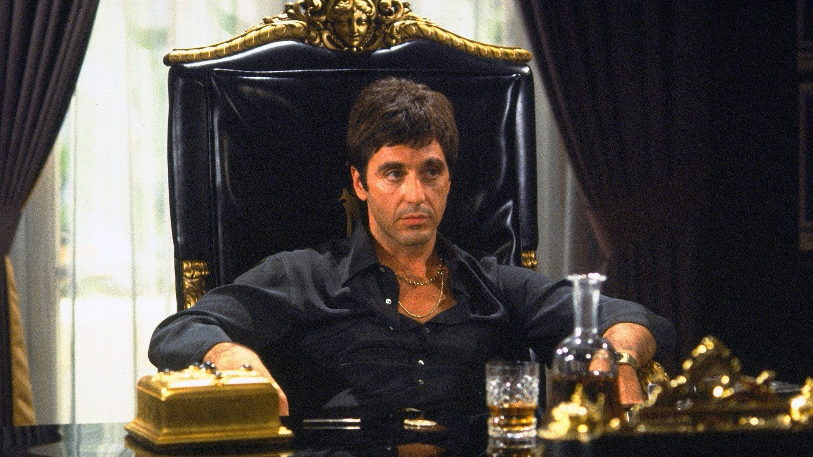

Personen
Alles über die Personen des Films
Al "Antonio Montana" Pacino
Antonio Montana ist der Hauptcharakter des Films Scarface und des Spieles Scarface the World is yours. Er wird im Film von Al Pacino verkörpert und gilt als eine der einflussreichsten Filmfiguren jemals. Tony kommt vor seiner Auswanderung aus Kuba in die USA, wo er häufig auf dem Bau arbeitete und in der kubanischen Armee war. Nach seinem Armeedienst saß er für einen wohl längeren Zeitraum im Gefängnis. Nach seiner Entlassung zog er in die USA, wo er zunächst in ein Sammellager mit dem Namen Freedomtown kam. Dort beging er seinen ersten Mord auf US-amerikanischem Boden, er tötete Rebeinga während einer Revolte durch einen Messerstich in den Bauch. Nach der Revolte wurden er und ein paar andere mit einer Greencard ausgewiesen und waren so legal in den USA. Er arbeitet zunächst mit seinem Freund Manny als Tellerwäscher, doch es erschließt sich für ihn die Möglichkeit mit Omar Suárez zusammenarbeiten, welcher kein unbeschriebenes Blatt im Drogenmilieu ist. Er wird von Omar gebeten einen Deal mit ein paar Leuten im Sun Ray Hotel über die Bühne zu bringen, welcher sich jedoch als verhängnisvolle Falle herausstellt, da Angel Hernandez, ein Freund von Tony dabei regelrecht hingerichtet wird. Als sie gerade Tony töten wollten, kommen die restlichen 2 und schaffen es sie daran zu hindern. Als Hector, der Kopf der anderen Partei, versucht, schwerverletzt zu fliehen, rennt Tony ihm hinterher und schießt ihn öffentlich auf der Straße nieder. Nach diesem Job lernt Tony Frank Lopez kennen, für wen der Rebeinga tötete. Er führt Tony in das Geschäft ein und macht ihm einen Namen in Miami.
Steven "Manny Ribera" Bauer
Manny Ribera (eigentlich: Manolo Ribera, auch: Manny Ray) ist ein Charakter aus Scarface. Er wird von Steven Bauer gespielt. Er ist Tonys bester Freund und wird später zu seiner rechten Hand. Manny ist ein Draufgänger und Frauenliebhaber, was ihn das eine oder andere Mal in schwierige Situationen bringt. Er sieht in Tony eine Art Held und möchte ihm nacheifern. Jedoch wird dies von Tony belächelt, da er glaubt Manny könne nur Frauen aufreißen, aber er verstehe nichts vom Geschäft. Letztendlich verliebt er sich in Tonys kleine Schwester Gina und fängt mit ihr eine Liebesbeziehung an. Die beide heiraten ohne Tonys Wissen und Zustimmung und ziehen in eine Villa in Coconut Grove. Als Tony von seiner Mutter erfährt, dass seine Schwester sich neuerdings im noblen Vorort aufhält und dort scheinbar in eine Villa gezogen ist, die eigentlich viel zu teuer für Sie ist, geht er der Sache nach und stattet seiner Schwester einen Überraschungsbesuch ab. Als Tony sieht, wer der heimliche Liebhaber ist, tötet er Manny im Affekt, muss aber im Nachhinein feststellen, dass dies ein großer Fehler war.
Michelle "Elvira Hancock" Pfeiffer
Elvira Hancock ist ein Charakter aus Scarface. Sie wird von Michelle Pfeiffer gespielt. Elvira ist in einer Beziehung mit Frank Lopez und lebt mit ihm in seiner Villa in Miami. Die Beziehung der beiden scheint allerdings nicht die beste zu sein, da sie stark kokain- und alkoholabhängig ist und ihm ständig Vorwürfe macht. Nach Franks Tod zieht Sie zu Tony und heiratet ihn schließlich. Aber auch ihre Beziehung scheitert. Bei einem Restaurantbesuch eskaliert ein Streit zwischen Tony und ihr, woraufhin sie ihn verlässt. Was danach mit ihr geschieht, ist nicht bekannt.
Robert "Frank Lopez" Loggia
Frank Lopez ist ein Charakter aus Scarface, der von Robert Loggia gespielt wird. Frank ist ein kubanischer Drogenboss, der in Miami Karriere gemacht hat. Er lebt mit Elvira Hancock zusammen in einer Villa in Miami. Ihre Beziehung scheint jedoch nicht die allerbeste zu sein. Er besitzt das Autohaus Lopez Motors und ein Jugend-Baseballteam. Nach einer Intrige gegen Tony wird er von diesem in seinem Büro aufgesucht und zur Rede gestellt. Nachdem Frank zugibt, Tony in eine Falle gelockt zu haben, wird er, im Auftrag von Tony, von Manny erschossen.
Mary Elizabeth "Gina Montana" Mastrantonio
Gina wurde am 15. Dezember 1960 in Kuba geboren. Sie ist die jüngere Schwester von Tony. Gina ist eines der beiden Familienmitglieder, die Tony in Miami hat, das andere ist seine Mutter. Tony ist sehr beschützerisch von ihr gesehen, als er einen Typen schlägt, der mit ihr im Babylon Club ist. Gina versucht gerade zu bleiben und besonnen, hart arbeiten, um auf ihre Mutter aufzupassen, sowie Unterricht nehmen, mit der Hoffnung, einen zu verdienen Zertifikat in Friseur. Kurz nachdem Tony in Amerika angekommen ist, etabliert er sich einigermaßen in das Lopez-Kartell, bevor er versucht, sich mit seiner Familie zu vereinen. Als er seine Mutter in Miami aufspürt, Sie lebt mit Gina zusammen. Tony versucht höflich zu sein und sich bei Mama gut zu benehmen, aber sie will nichts mit Tony zu tun, der ihn (zu Recht) beschuldigt, ein Gauner zu sein, als wäre er in ihrer Heimat Kuba. Gina jedoch ist überglücklich, ihren älteren Bruder zu sehen. Mama warnt Tony, weg zu bleiben, da sie befürchtet, dass er schlecht wird Einfluss auf Gina. Tony bietet seiner Mutter tausend Dollar an, aber sie lehnt es rundweg ab und behauptet das muss dreckiges Geld sein. Als Mrs. Montana wieder hineingeht, sagt Gina Tony, er solle sich keine Sorgen machen. Ihre Mutter hat unter Druck geraten. Tony gibt Gina heimlich das Geld und sagt, dass ein gutes Mädchen wie sie liebt Ihre Familie und ihre Arbeit haben es verdient. Tony schlägt vor, das Geld für Dinge wie Feiern oder Mode; Seine einzige Bitte ist, dass Gina einen Teil des Geldes für Mamas Wohltat einsammelt, wie zum Beispiel Essen gehen einkaufen oder eine Stromrechnung bezahlen. Gina ist mit Tonys Großzügigkeit zufrieden.